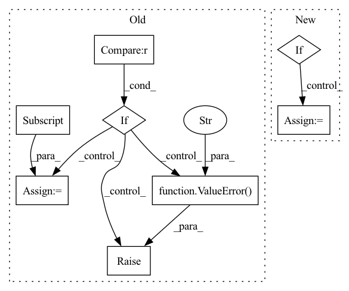

Pattern ID :245
Before Change
hidden_states = outputs["decoder_hidden_states"][-1]
eos_mask = source_ids.eq(self.config.eos_token_id)
if len(torch.unique(eos_mask.sum(1))) > 1 :
raise ValueError("All examples must have the same number of <eos> tokens." )
vec = hidden_states[eos_mask, :].view(hidden_states.size(0), -1,
hidden_states.size(-1))[:, -1, :]
logits = self.classifier(vec)
prob = F.softmax(logits)
if labels is not None:After Change
if self.args.model_type == "codet5":
vec = self.get_t5_vec(source_ids)
elif :
vec = self.get_bart_vec(source_ids)
elif self.args.model_type == "roberta":
vec = self.get_roberta_vec(source_ids)
logits = self.classifier(vec)
prob = nn.functional.softmax(logits)In pattern: SUPERPATTERN
Frequency: 3
Non-data size: 8
Instances Fragment ID: 882617
Project Name: salesforce/codet5
Commit Name: 0bf3c0c43e92fcf54d9df68c793ac22f2b60aad4
Time: 2021-10-29
Author: 337111657@qq.com
File Name: models.py
M Class Name: CloneModel
N Class Name: CloneModel
M Method Name: forward(3)
N Method Name: forward(3)
M Parent Class: nn.Module
N Parent Class: nn.Module
M File Name: models.py
N File Name: models.py
M Start Line: 111
M End Line: 125
N Start Line: 103
N End Line: 116
Before Change
batch, permutation_dim, -1
)
if self.combining_operation == "mean" :
e = iid_embeddings.mean(dim=1)
elif self.combining_operation == "sum":
e = iid_embeddings.sum(dim=1)
else:
raise ValueError("combining_operation must be in ["sum", "mean"]." )
embedding = self.fc_subnet(e)
return embeddingAfter Change
batch, permutation_dim, _ = x.shape
// if no NaNs for padding varying trial lengths we can batch the computation
if not torch.isnan(x).any():
trial_embeddings = self.trial_net(x.view(batch * permutation_dim, -1)).view(
batch, permutation_dim, -1
)
combined_embedding = self.combining_function(trial_embeddings, dim=1)
trial_counts = torch.ones(batch, 1, dtype=torch.float32) * permutation_dim
// otherwise we need to loop over the batch to account for varying trial lengths
else:
combined_embedding = []
trial_counts = torch.zeros(batch, 1)
for i in range(batch):
// remove NaNs
valid_x = x[i, ~torch.isnan(x[i, :, 0]), :]
trial_counts[i] = valid_x.shape[0]
trial_embeddings = self.trial_net(valid_x)
// apply combining operation over permutation dimension
combined_embedding.append( Fragment ID: 882603
Project Name: mackelab/sbi
Commit Name: 1352e77bdbc47aa4a4130679903b57672e48218c
Time: 2023-03-01
Author: jan.boelts@tum.de
File Name: sbi/neural_nets/embedding_nets.py
M Class Name: PermutationInvariantEmbedding
N Class Name: PermutationInvariantEmbedding
M Method Name: forward(2)
N Method Name: forward(2)
M Parent Class: nn.Module
N Parent Class: nn.Module
M File Name: sbi/neural_nets/embedding_nets.py
N File Name: sbi/neural_nets/embedding_nets.py
M Start Line: 271
M End Line: 284
N Start Line: 277
N End Line: 304
Before Change
// Pooling
// out: (BB, embedding_dim, NN)
if self._pooling_func_name == "max" :
out = torch.max(out, -1, keepdim=True)[0]
elif self._pooling_func_name == "mean":
out = torch.mean(out, keepdim=True, dim=-1)
elif self._pooling_func_name == "sum":
out = torch.sum(out, keepdim=True, dim=-1)
else:
raise ValueError(f"Pooling function {self._pooling_func_name} is not yet supported!" )
// out: (BB, embedding_dim, 1)
out = torch.flatten(out, start_dim=-2)
After Change
// Pooling
// out: (BB, embedding_dim, NN)
masking_input = {"in_tensor": out.transpose(2, 1)}
if self.use_masking:
masking_input["mask_tensor"] = masking_tensor
out = self.pooling_block(masking_input)["masking_out"]
// output_tensor: (BB, embedding_dim)
Fragment ID: 882610
Project Name: enlite-ai/maze
Commit Name: 53a9f4e4997b8a5451f14fb57dd6c5cb9becd110
Time: 2021-04-15
Author: office@enlite.ai
File Name: maze/perception/blocks/feed_forward/point_net.py
M Class Name: PointNetFeatureTransformNet
N Class Name: PointNetFeatureTransformNet
M Method Name: forward(3)
N Method Name: forward(2)
M Parent Class: nn.Module
N Parent Class: nn.Module
M File Name: maze/perception/blocks/feed_forward/point_net.py
N File Name: maze/perception/blocks/feed_forward/point_net.py
M Start Line: 93
M End Line: 127
N Start Line: 80
N End Line: 134